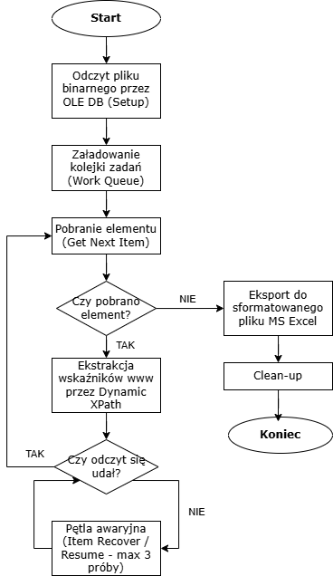
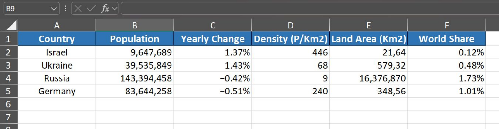

Blue Prism · RPA
Skalowalny robot do ekstrakcji i raportowania danych rynkowych (Blue Prism)

Cel projektu
Wykonany projekt to pełnowartościowy Proof of Concept symulujący automatyzację powtarzalnych procesów badawczych i analitycznych w środowisku korporacyjnym. Głównym celem robota jest całkowita eliminacja manualnego wyszukiwania i cyklicznego raportowania danych demograficznych oraz populacyjnych z portalu Worldometer dla zmiennej listy państw. Dzięki przeniesieniu tego obowiązku na cyfrowe narzędzie proces przygotowywania zestawień staje się w stu procentach powtarzalny i wolny od błędów ludzkich, a wyekstraktowane informacje trafiają do standardowego arkusza kalkulacyjnego w formacie natychmiast gotowym do dalszych analiz biznesowych.
Architektura
Architektura rozwiązania została zaprojektowana w środowisku Blue Prism. Zamiast standardowego, powolnego otwierania arkusza Excel przez interfejs graficzny robot wykorzystuje bezpośrednie połączenie bazodanowe OLE DB. Na etapie inicjalizacji system w tle odczytuje wejściową listę państw i umieszcza je w transakcyjnej kolejce zadań Work Queue. Główna pętla procesu pobiera kolejne pozycje sekwencyjnie za pomocą akcji Get Next Item, co nie tylko gwarantuje pełną skalowalność i śledzenie statusu każdego elementu, ale również umożliwia bezproblemowe wznowienie pracy w przypadku awarii.
Ekstrakcja danych
Kluczowym aspektem projektu jest wysoka odporność na zmiany w interfejsie
aplikacji webowych oraz zaawansowana logika samoczynnej naprawy błędów.
Do lokalizacji danych w tabeli robot nie używa sztywnych współrzędnych
ani prostego wyszukiwania tekstu, lecz dynamicznie budowanych selektorów XPath
w formacie //tr[@id='nazwa_panstwa']/td[x], do których na bieżąco
wstrzykiwana jest zmienna pobrana z kolejki. Wykorzystanie unikalnych
identyfikatorów wierszy gwarantuje bezbłędne namierzanie elementów nawet
przy zmianach layoutu strony. Po załadowaniu witryny i weryfikacji struktury DOM
blokiem Wait Stage system ekstraktuje pięć strategicznych wskaźników
populacyjnych, w tym roczną zmianę procentową, gęstość zaludnienia
oraz udział w populacji globalnej.
Self-Healing
W celu zapewnienia ciągłości działania proces wyposażono w mechanizm Self-Healing zaimplementowany poprzez strukturę Retry Loop z limitem trzech prób odczytu. W sytuacji wystąpienia losowych opóźnień sieciowych lub błędu komunikacji ze stroną aktywuje się ścieżka awaryjna z blokiem Item Recover. Robot automatycznie przywraca i aktywuje okno przeglądarki, po czym wznawia główny nurt przetwarzania. Jeśli po wyczerpaniu limitu prób odczyt nadal jest niemożliwy, system nie przerywa działania całego programu. Problemowy element jest oznaczany jako wyjątek systemowy lub biznesowy w kolejce, a robot płynnie przechodzi do przetwarzania kolejnego państwa z listy.
Raportowanie
Faza końcowa następuje po przetworzeniu wszystkich pozycji z kolejki zadań. Wyekstraktowana kolekcja danych jest generowana do sformatowanego pliku MS Excel na bazie zoptymalizowanego szablonu binarnego. Rozwiązanie automatycznie dba o higienę prezentacji wyników, dopasowując szerokość kolumn i nakładając właściwe formatowanie dla wartości liczbowych oraz wskaźników procentowych. Zwieńczeniem pracy jest procedura Clean-up, podczas której robot bezpiecznie zamyka sesję przeglądarki Google Chrome w tle i zapisuje gotowy raport w wyznaczonej lokalizacji.


Kontakt
Chcesz omówić podobny projekt?
Napisz — chętnie opowiem o szczegółach realizacji i możliwościach współpracy.
Przejdź do kontaktu